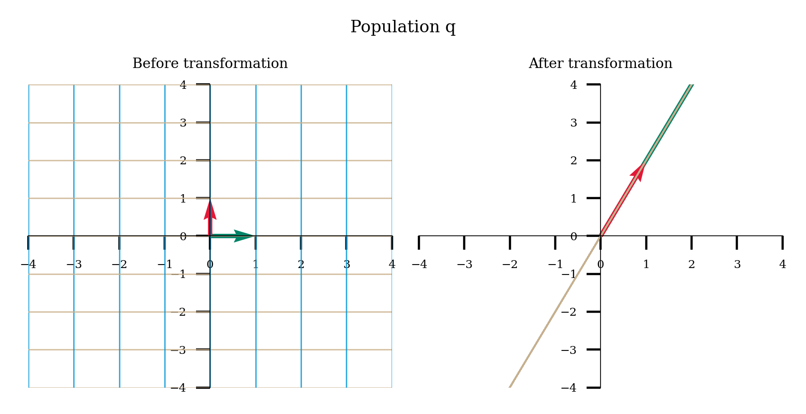
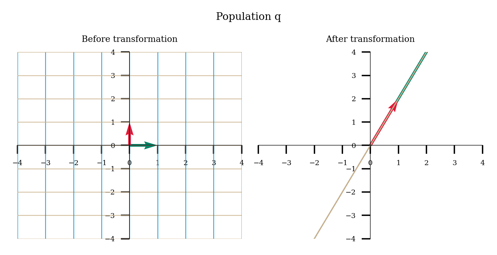

Tutorial 2: Matrices¶
Week 0, Day 3: Linear Algebra
By Neuromatch Academy
Content creators: Ella Batty
Content reviewers: Keith van Antwerp, Aderogba Bayo, Anoop Kulkarni, Pooya Pakarian
Production editors: Siddharth Suresh, Ella Batty
Our 2021 Sponsors, including Presenting Sponsor Facebook Reality Labs

Tutorial Objectives¶
During today, we will learn the basics of linear algebra, focusing on the topics that underlie the material on future days in the NMA Computational Neuroscience course. In this tutorial, we focus on matrices: their definition, their properties & operations, and especially on a geometrical intuition of them.
By the end of this tutorial, you will be able to :
Explain matrices as a linear transformation and relate matrix properties to properties of that linear transformation
Perform matrix multiplication by hand
Define what eigenvalues/eigenvectors are
Code Credit:
Some elements of this problem set are from or inspired by https://openedx.seas.gwu.edu/courses/course-v1:GW+EngComp4+2019/about. In particular, we are using their plot_linear_transformation and plot_linear_transformations functions.
Code under BSD 3-Clause License © 2019 Lorena A. Barba, Tingyu Wang. THIS SOFTWARE IS PROVIDED BY THE COPYRIGHT HOLDERS AND CONTRIBUTORS “AS IS” AND ANY EXPRESS OR IMPLIED WARRANTIES, INCLUDING, BUT NOT LIMITED TO, THE IMPLIED WARRANTIES OF MERCHANTABILITY AND FITNESS FOR A PARTICULAR PURPOSE ARE DISCLAIMED. IN NO EVENT SHALL THE COPYRIGHT HOLDER OR CONTRIBUTORS BE LIABLE FOR ANY DIRECT, INDIRECT, INCIDENTAL, SPECIAL, EXEMPLARY, OR CONSEQUENTIAL DAMAGES (INCLUDING, BUT NOT LIMITED TO, PROCUREMENT OF SUBSTITUTE GOODS OR SERVICES; LOSS OF USE, DATA, OR PROFITS; OR BUSINESS INTERRUPTION) HOWEVER CAUSED AND ON ANY THEORY OF LIABILITY, WHETHER IN CONTRACT, STRICT LIABILITY, OR TORT (INCLUDING NEGLIGENCE OR OTHERWISE) ARISING IN ANY WAY OUT OF THE USE OF THIS SOFTWARE, EVEN IF ADVISED OF THE POSSIBILITY OF SUCH DAMAGE.
Setup¶
# Imports
import numpy as np
import matplotlib.pyplot as plt
Figure settings¶
#@title Figure settings
import ipywidgets as widgets# interactive display
from ipywidgets import fixed
%config InlineBackend.figure_format = 'retina'
plt.style.use("https://raw.githubusercontent.com/NeuromatchAcademy/course-content/master/nma.mplstyle")
Plotting functions¶
# @title Plotting functions
import numpy
from numpy.linalg import inv, eig
from math import ceil
from matplotlib import pyplot, ticker, get_backend, rc
from mpl_toolkits.mplot3d import Axes3D
from itertools import cycle
_int_backends = ['GTK3Agg', 'GTK3Cairo', 'MacOSX', 'nbAgg',
'Qt4Agg', 'Qt4Cairo', 'Qt5Agg', 'Qt5Cairo',
'TkAgg', 'TkCairo', 'WebAgg', 'WX', 'WXAgg', 'WXCairo']
_backend = get_backend() # get current backend name
# shrink figsize and fontsize when using %matplotlib notebook
if _backend in _int_backends:
fontsize = 4
fig_scale = 0.75
else:
fontsize = 5
fig_scale = 1
grey = '#808080'
gold = '#cab18c' # x-axis grid
lightblue = '#0096d6' # y-axis grid
green = '#008367' # x-axis basis vector
red = '#E31937' # y-axis basis vector
darkblue = '#004065'
pink, yellow, orange, purple, brown = '#ef7b9d', '#fbd349', '#ffa500', '#a35cff', '#731d1d'
quiver_params = {'angles': 'xy',
'scale_units': 'xy',
'scale': 1,
'width': 0.012}
grid_params = {'linewidth': 0.5,
'alpha': 0.8}
def set_rc(func):
def wrapper(*args, **kwargs):
rc('font', family='serif', size=fontsize)
rc('figure', dpi=200)
rc('axes', axisbelow=True, titlesize=5)
rc('lines', linewidth=1)
func(*args, **kwargs)
return wrapper
@set_rc
def plot_vector(vectors, tails=None):
''' Draw 2d vectors based on the values of the vectors and the position of their tails.
Parameters
----------
vectors : list.
List of 2-element array-like structures, each represents a 2d vector.
tails : list, optional.
List of 2-element array-like structures, each represents the coordinates of the tail
of the corresponding vector in vectors. If None (default), all tails are set at the
origin (0,0). If len(tails) is 1, all tails are set at the same position. Otherwise,
vectors and tails must have the same length.
Examples
--------
>>> v = [(1, 3), (3, 3), (4, 6)]
>>> plot_vector(v) # draw 3 vectors with their tails at origin
>>> t = [numpy.array((2, 2))]
>>> plot_vector(v, t) # draw 3 vectors with their tails at (2,2)
>>> t = [[3, 2], [-1, -2], [3, 5]]
>>> plot_vector(v, t) # draw 3 vectors with 3 different tails
'''
vectors = numpy.array(vectors)
assert vectors.shape[1] == 2, "Each vector should have 2 elements."
if tails is not None:
tails = numpy.array(tails)
assert tails.shape[1] == 2, "Each tail should have 2 elements."
else:
tails = numpy.zeros_like(vectors)
# tile vectors or tails array if needed
nvectors = vectors.shape[0]
ntails = tails.shape[0]
if nvectors == 1 and ntails > 1:
vectors = numpy.tile(vectors, (ntails, 1))
elif ntails == 1 and nvectors > 1:
tails = numpy.tile(tails, (nvectors, 1))
else:
assert tails.shape == vectors.shape, "vectors and tail must have a same shape"
# calculate xlimit & ylimit
heads = tails + vectors
limit = numpy.max(numpy.abs(numpy.hstack((tails, heads))))
limit = numpy.ceil(limit * 1.2) # add some margins
figsize = numpy.array([2,2]) * fig_scale
figure, axis = pyplot.subplots(figsize=figsize)
axis.quiver(tails[:,0], tails[:,1], vectors[:,0], vectors[:,1], color=darkblue,
angles='xy', scale_units='xy', scale=1)
axis.set_xlim([-limit, limit])
axis.set_ylim([-limit, limit])
axis.set_aspect('equal')
# if xticks and yticks of grid do not match, choose the finer one
xticks = axis.get_xticks()
yticks = axis.get_yticks()
dx = xticks[1] - xticks[0]
dy = yticks[1] - yticks[0]
base = max(int(min(dx, dy)), 1) # grid interval is always an integer
loc = ticker.MultipleLocator(base=base)
axis.xaxis.set_major_locator(loc)
axis.yaxis.set_major_locator(loc)
axis.grid(True, **grid_params)
# show x-y axis in the center, hide frames
axis.spines['left'].set_position('center')
axis.spines['bottom'].set_position('center')
axis.spines['right'].set_color('none')
axis.spines['top'].set_color('none')
@set_rc
def plot_transformation_helper(axis, matrix, *vectors, unit_vector=True, unit_circle=False, title=None):
""" A helper function to plot the linear transformation defined by a 2x2 matrix.
Parameters
----------
axis : class matplotlib.axes.Axes.
The axes to plot on.
matrix : class numpy.ndarray.
The 2x2 matrix to visualize.
*vectors : class numpy.ndarray.
The vector(s) to plot along with the linear transformation. Each array denotes a vector's
coordinates before the transformation and must have a shape of (2,). Accept any number of vectors.
unit_vector : bool, optional.
Whether to plot unit vectors of the standard basis, default to True.
unit_circle: bool, optional.
Whether to plot unit circle, default to False.
title: str, optional.
Title of the plot.
"""
assert matrix.shape == (2,2), "the input matrix must have a shape of (2,2)"
grid_range = 20
x = numpy.arange(-grid_range, grid_range+1)
X_, Y_ = numpy.meshgrid(x,x)
I = matrix[:,0]
J = matrix[:,1]
X = I[0]*X_ + J[0]*Y_
Y = I[1]*X_ + J[1]*Y_
origin = numpy.zeros(1)
# draw grid lines
for i in range(x.size):
axis.plot(X[i,:], Y[i,:], c=gold, **grid_params)
axis.plot(X[:,i], Y[:,i], c=lightblue, **grid_params)
# draw (transformed) unit vectors
if unit_vector:
axis.quiver(origin, origin, [I[0]], [I[1]], color=green, **quiver_params)
axis.quiver(origin, origin, [J[0]], [J[1]], color=red, **quiver_params)
# draw optional vectors
color_cycle = cycle([pink, darkblue, orange, purple, brown])
if vectors:
for vector in vectors:
color = next(color_cycle)
vector_ = matrix @ vector.reshape(-1,1)
axis.quiver(origin, origin, [vector_[0]], [vector_[1]], color=color, **quiver_params)
# draw optional unit circle
if unit_circle:
alpha = numpy.linspace(0, 2*numpy.pi, 41)
circle = numpy.vstack((numpy.cos(alpha), numpy.sin(alpha)))
circle_trans = matrix @ circle
axis.plot(circle_trans[0], circle_trans[1], color=red, lw=0.8)
# hide frames, set xlimit & ylimit, set title
limit = 4
axis.spines['left'].set_position('center')
axis.spines['bottom'].set_position('center')
axis.spines['left'].set_linewidth(0.3)
axis.spines['bottom'].set_linewidth(0.3)
axis.spines['right'].set_color('none')
axis.spines['top'].set_color('none')
axis.set_xlim([-limit, limit])
axis.set_ylim([-limit, limit])
if title is not None:
axis.set_title(title)
@set_rc
def plot_linear_transformation(matrix, *vectors, name = None, unit_vector=True, unit_circle=False):
""" Plot the linear transformation defined by a 2x2 matrix using the helper
function plot_transformation_helper(). It will create 2 subplots to visualize some
vectors before and after the transformation.
Parameters
----------
matrix : class numpy.ndarray.
The 2x2 matrix to visualize.
*vectors : class numpy.ndarray.
The vector(s) to plot along with the linear transformation. Each array denotes a vector's
coordinates before the transformation and must have a shape of (2,). Accept any number of vectors.
unit_vector : bool, optional.
Whether to plot unit vectors of the standard basis, default to True.
unit_circle: bool, optional.
Whether to plot unit circle, default to False.
"""
figsize = numpy.array([4,2]) * fig_scale
figure, (axis1, axis2) = pyplot.subplots(1, 2, figsize=figsize)
plot_transformation_helper(axis1, numpy.identity(2), *vectors, unit_vector=unit_vector, unit_circle=unit_circle, title='Before transformation')
plot_transformation_helper(axis2, matrix, *vectors, unit_vector=unit_vector, unit_circle=unit_circle, title='After transformation')
if name is not None:
figure.suptitle(f'Population {name}')
def plot_eig_vec_transform(W):
classic = 'k'
vec_names = ['a', 'b','c','d','e','f','g', 'h']
_, vecs = np.linalg.eig(W)
vecs = vecs.T
fig, axes = plt.subplots(1, 2, figsize=(2, 1))
colors = plt.rcParams['axes.prop_cycle'].by_key()['color']
for i in range(2):
axes[i].set(xlim=[-3.5, 3.5], ylim=[-3.5,3.5])
axes[i].axis('Off')
axes[i].plot([0, 0], [-3.5, 3.5], classic, alpha=.4)
axes[i].plot([-3.5, 3.5], [0, 0], classic, alpha=.4)
for i_vec, vec in enumerate(vecs):
axes[0].arrow(0, 0, vec[0], vec[1], head_width=.2, facecolor=colors[i_vec], edgecolor=colors[i_vec], length_includes_head=True)
axes[0].annotate(vec_names[i_vec], xy=(vec[0]+np.sign(vec[0])*.15, vec[1]+np.sign(vec[1])*.15), color=colors[i_vec])
transformed_vec = np.matmul(W, vec)
axes[1].arrow(0, 0, transformed_vec[0], transformed_vec[1], head_width=.2, facecolor=colors[i_vec], edgecolor=colors[i_vec], length_includes_head=True)
axes[1].annotate(vec_names[i_vec], xy=(transformed_vec[0]+np.sign(transformed_vec[0])*.15, transformed_vec[1]+np.sign(transformed_vec[1])*.15), color=colors[i_vec])
axes[0].set_title('Before')
axes[1].set_title('After')
Section 1: Intro to matrices¶
Section 1.1: Matrices to solve systems of equations¶
Video 1: Systems of Equations¶
In a variety of contexts, we may encounter systems of linear equations like this one:
We may know all the x’s and want to solve for y’s, or we may know the y’s and want to solve for the x’s. We can solve this in several different ways but one especially appealing way is to cast it as a matrix-vector equation:
where $\(\begin{align} \mathbf{W} &= \begin{bmatrix} 3 & 2 & 1 \\ 7 & 1 & 2 \\ 1 &-1 &-2 \end{bmatrix}, \mathbf{x} = \begin{bmatrix} x_1 \\ x_2 \\ x_3 \end{bmatrix}, \mathbf{y} = \begin{bmatrix} y_1 \\ y_2 \\ y_3 \end{bmatrix}\\ \end{align}\)$
If we know \(\mathbf{W}\) and \(\mathbf{x}\), we can solve for \(\mathbf{y}\) using matrix-vector multiplication. Each row of \(\mathbf{y}\) is computed as the dot product of the equivalent row of \(\mathbf{W}\) and \(\mathbf{x}\).
If we know \(\mathbf{W}\) and \(\mathbf{y}\), we can sometimes solve for \(\mathbf{x}\) by using the inverse of \(\mathbf{W}\): $\( \mathbf{x} = W^{-1}\mathbf{y} \)$. The reason this only sometimes works will be dived into later in this tutorial!
Coding Exercise 1.1: Understanding neural transformations¶
We will look at a group of 2 LGN neurons which get input from 2 retinal neurons: we will call the population of LGN neurons population p. Below, we have the system of linear equations that dictates the neuron models for each population. \(r_1\) and \(r_2\) correspond to the retinal neural activities (of neuron 1 and 2). \(g_{p_1}\) and \(g_{p_2}\) correspond to the responses of the LGN neurons 1 and 2 in population p.
Cast each this as a matrix-vector multiplication:
where P is the weight matrix to population p.
Let’s say we only recorded from the LGN cells (and know the weight matrix) and are trying to figure out how the retinal cells responded. Solve the matrix equation for the given LGN activities:
# Create P (using np array)
P = ...
# Create g_p (using np array)
g_p = ...
# Solve for r (using np.linalg.inv)
r = ...
# Print r
print(r)
Ellipsis
You should see the output [1, 5]
You can recover how the LGN neurons respond given the weight matrix and V1 responses! You have solved the system of equations using matrices. We can’t always do this though: let’s say we have a different group of 2 V1 neurons - population q - with the following weight matrix from the LGN neurons.
As you can see if you uncomment and run the next code cell, we get an error if we try to invert this matrix to solve the equation. We’ll find out more about this in the next sections.
# g_q = np.array([16, 7])
# Q = np.array([[4, 1], [8, 2]])
# print(np.linalg.inv(Q) @ g_q)
Section 1.2: Matrices as linear transformations¶
Video 2: Linear Transformations¶
Matrices can be thought of as enacting linear transformations. When multiplied with a vector, they transform it into another vector. In fact, they are transforming a grid of space in a linear manner: the origin stays in place and grid lines remain straight, parallel, and evenly spaced.
Coding Exercise 1.2: Creating matrices for transformations¶
Come up with a matrix \(A\) for which the corresponding linear transformation is reflection through the \(y\) axis (flipping across the \(y\) axis). For example, \(\mathbf{x} = \begin{bmatrix} 2 \\ 6 \\ \end{bmatrix}\) should become \(\mathbf{b} = \begin{bmatrix} -2 \\ 6 \\ \end{bmatrix}\) when multiplied with \(A\).
Remember to think about where your basis vectors should end up! Then your matrix consists of the transformed basis vectors. Drawing out what you want to happen can help
A = ...
# Uncomment to visualize transformation
#plot_linear_transformation(A)
Example output:

Come up with a matrix \(A\) for which the corresponding linear transformation is projecting onto the \(x\) axis. For example, \(\bar{x} = \begin{bmatrix} 2 \\ 3 \\ \end{bmatrix}\) should become \(\bar{b} = \begin{bmatrix} 2 \\ 0 \\ \end{bmatrix}\) when multiplied with \(A\).
A = ...
# Uncomment to visualize transformation
#plot_linear_transformation(A)
Example output:

Section 1.3: Rank & Null Space¶
Video 3: Rank & Null Space¶
Square matrices always result in vectors with the same dimensions (number of components) but can alter the dimensionality of the transformed space. Let’s say you have a 3 x 3 matrix. You will transform from 3-dimensional vectors to 3-dimensional vectors. You will often be transforming from all of 3D space to all of 3D space. However, this isn’t always the case! You could have a 3 x 3 matrix that always results in a vector that lies along a 2D plane through 3D space. This matrix would be transforming from a 3 dimensional vector space (all of R3) to a 2 dimensional vector space (the 2D plane).
Matrices that aren’t square are enacting transformations that change the dimensionality of the vectors. If you have a 4 x 5 matrix, you are transforming 5-dimensional vectors to 4-dimensional vectors. Similarly, if you have a 4 x 2 matrix, you are transformaing from 4-dimensional vectors to 2-dimensional vectors.
The range of a matrix is the set of all possible vectors it can lead to after a transformation. The range of the previous example would be the 2D plane. The rank of a matrix is the dimensionality of the range: in this case, 2.
Sometimes, a matrix will transform a non-zero vector into a zero vector (the origin). The null space of a matrix is the set of all vectors that will be transformed into the origin.
Think! 1.3: Neural coding¶
Let’s return to the setup of the previous coding exercise: we have two populations of V1 neurons, p and q, responding to LGN neurons. Visualize the linear transformations of these matrices by running the next code cell. Then discuss the following questions:
What are the ranks of weight matrix P and Q?
What does the null space of these matrices correspond to in our neuroscience setting? Advanced: What do you think the dimensionality of the null space is for P and Q?
What is the dimensionality of the population of neural responses in population p? How about in q?
If we wanted to decode LGN neural activity from the V1 activities, would we always be able to completely recover the LGN activity when looking at population p? How about population q? What does this tell us about the information loss of the neural processing?
# @markdown Execute to visualize linear transformations
P = np.array([[1, 3], [2, 1]])
plot_linear_transformation(P, name = 'p')
Q = np.array([[4, 1], [8, 2]])
plot_linear_transformation(Q, name = 'q')
 

Section 2: Eigenvalues & Eigenvectors¶
Video 4: Eigenstuff¶
Eigenvectors, \(\mathbf{v}\) of a matrix \(\mathbf{W}\) are vectors that, when multipled by the matrix, equal a scalar multiple of themselves. That scalar multiple is the corresponding eigenvalue, \(\lambda\).
Think! 2: Identifying transformations from eigenvectors¶
Earlier, we learned how to think about linear transformations in terms of where the standard basis vectors end up. We can also think about them in terms of eigenvectors.
Just by looking at eigenvectors before and after a transformation, can you describe what the transformation is in words? Try for each of the two plots below.
Note that I show an eigenvector for every eigenvalue. The x/y limits do not change in before vs after (so eigenvectors are showed scaled by the eigenvalues).
Here are some transformation words to jog your memory and guide discussion: contraction, expansion, horizontal vs vertical, projection onto an axis, reflection, and rotation.
¶
# @title
# @markdown Execute this cell to visualize vectors
W = np.array([[3, 0], [0, 1]])
plot_eig_vec_transform(W)

¶
# @title
# @markdown Execute this cell to visualize vectors
W = np.array([[0, 1], [1, 0]])
plot_eig_vec_transform(W)

As we saw above, looking at how just the eigenvectors change after a transformation can be very informative about what that transformation was.
Section 3: Matrix multiplication¶
Video 5: Matrix Multiplication¶
We sometimes want to multiple two matrices together, instead of a matrix with a vector. Let’s say we’re multiplying matrices \(\mathbf{A}\) and \(\mathbf{B}\) to get \(\mathbf{C}\): $\( \mathbf{C} = \mathbf{A}\mathbf{B}\)$.
We take the dot product of each row of A with each column of B. The resulting scalar is placed in the element of \(\mathbf{C}\) that is the same row (as the row in A) and column (as the column in B). So the element of \(\mathbf{C}\) at row 4 and column 2 is the dot product of the 4th row of \(\mathbf{A}\) and the 2nd column of \(\mathbf{B}\). We can write this in a formula as:
Exercise 2: Computation corner¶
Break out the pen and paper - it’s critical to implement matrix multiplication yourself to fully understand how it works.
Let’s say we have 3 retina neurons and 2 LGN neurons. The weight matrix, \(W\), between the retina and LGN neurons is:
We are going to look at the activity at two time steps (each time step is a column). Our retina activity matrix, \(R\), is:
Please compute the LGN neural activity, \(G\), according to our linear model:
$\(G = WR \)$.
Please calculate it 1) by-hand and then 2) using code. Check that the answers match!
# Compute by hand first!
# Define R
R = ...
# Define W
W = ...
# Compute G
# in Python, we can use @ for matrix multiplication: matrix1 @ matrix2
G = ...
# Print values of G
print(G)
Ellipsis
Summary¶
In this tutorial, you have learned how to think about matrices from the perspective of solving a system of equations and as a linear transformation of space. You have learned:
Properties of a matrix, such as rank & null space
How the invertibility of matrices relates to the linear transform they enact
What eigenvalues/eigenvectors are and why they might be useful
We will be using this knowledge in many of the days in the NMA computational neuroscience course.